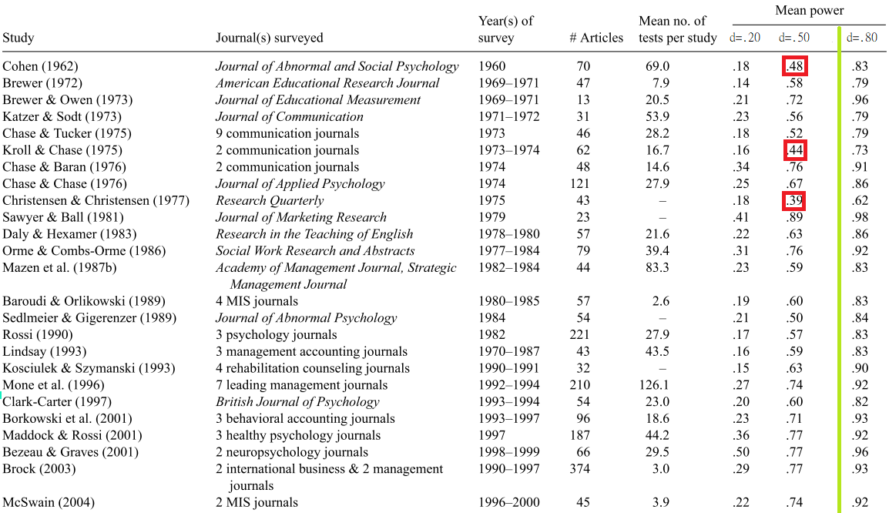
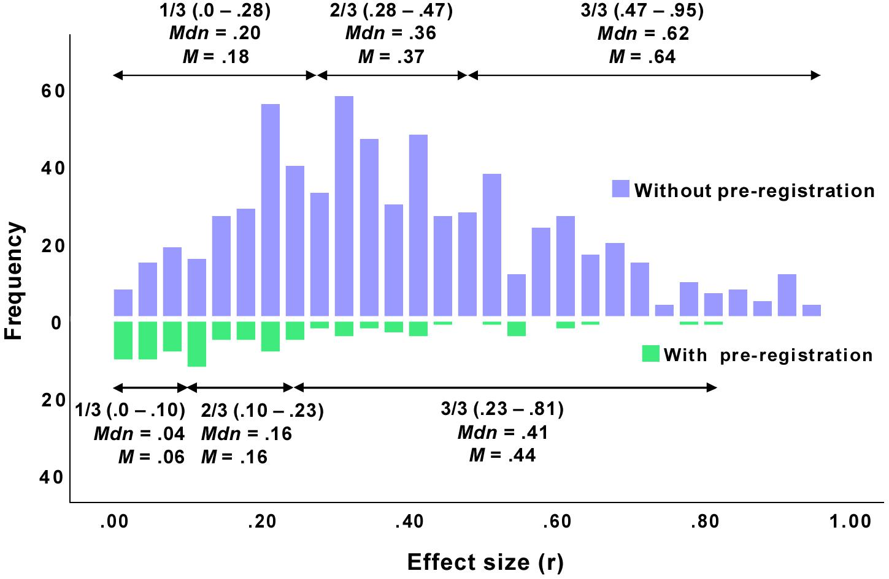
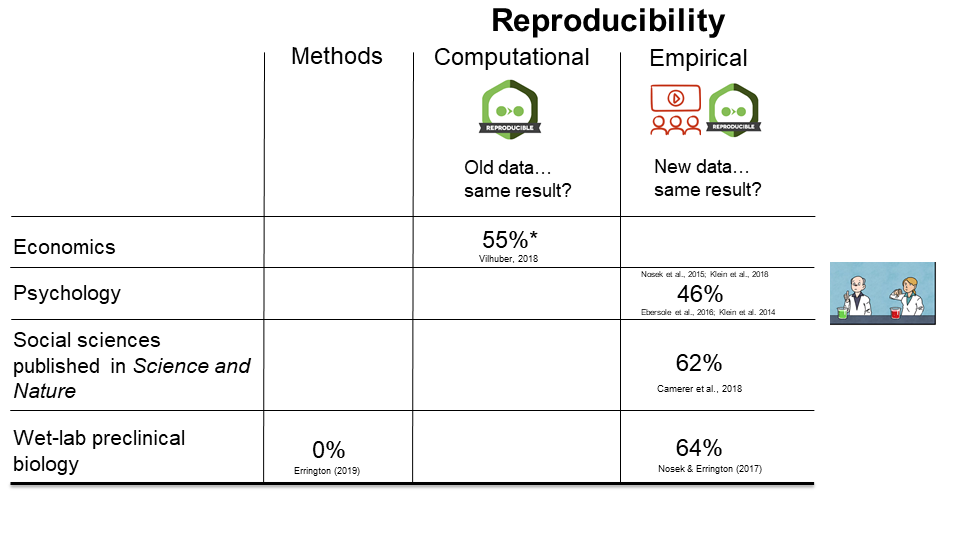
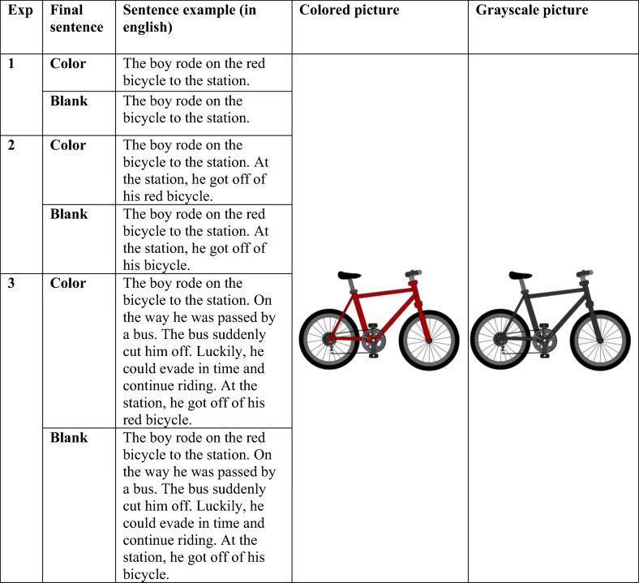
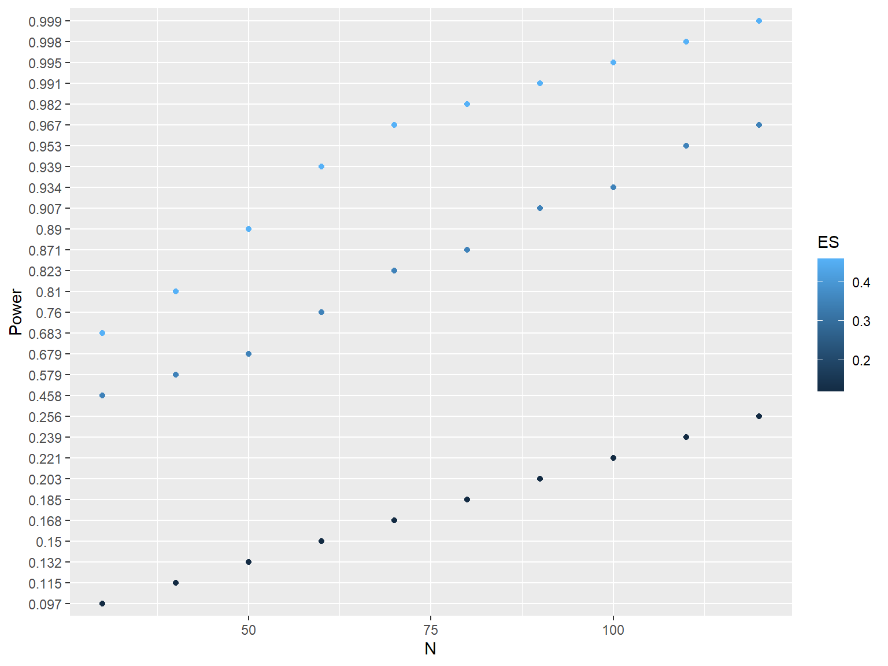
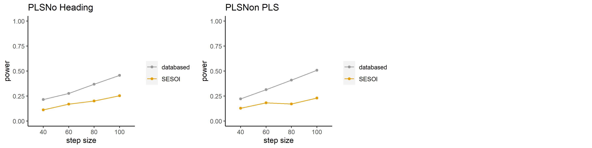
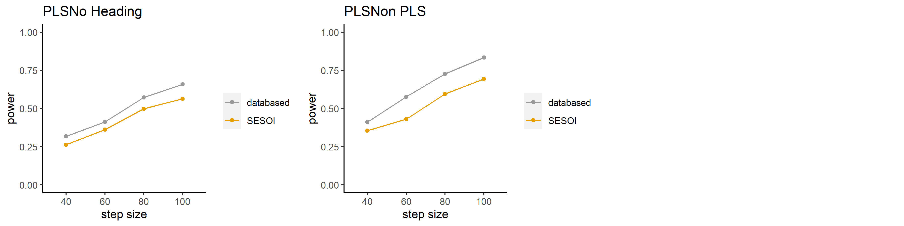
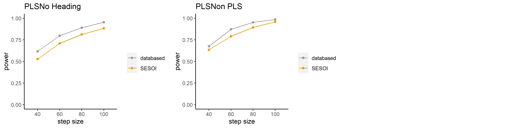

講義3: 提高研究可重製性的透明化操作
陳紹慶
上課互動平台
主題
- 心理科學研究欠缺可重製性/低考驗力的現況
- 透明化操作與可重製性保障: 案例分析
- 透明化操作示範及討論: Datawiz beta示範
學習目標
1/3 評估與解讀效果量
- 估計與解讀研究指標的效果量
2/3 設計有高考驗力的研究
- 設定最小有意義效果量及樣本數
3/3 提高研究可重製性的透明化操作
- 保障研究的可重製性
預估重製研究效果量的合適模式Part 1
你認為那種資訊能獲得最充分的效果量估計值？
- 根據報告的統計數值(t,F,效果量指標,各變項平均值…)
- 根據測量單位的估計值(參與者平均值,項目平均值…)
- 根據原始觀察值(參與者各項目反應紀錄…)
文獻考驗力調查
- 2010年之前：文獻回顧
- 2010年之後：文獻回顧 + 合作協作研究 + 預先註冊
2010年之前
Ellis (2010)彙整社會科學各領域研究報告達到的考驗力。
以效果量低中高標計算檢定結果的平均事後考驗力。

2010年之後
Schäfer
and Schwarz (2019)
彙整2017~2018各心理科學領域研究報告效果量。
效果量依研報告次數佔比分級，無預先註冊的心理學研究傾向高估效果量。

可重製研究至今的發展狀況
- 評估心理科學研究品質的方法不斷增加。
- 更新心理科學研究觀念與操作手法的速度不夠快。
預估重製研究效果量的合適模式Part 2
- 根據報告的統計數值(t,F,效果量指標,各變項平均值…)
- 根據測量單位的估計值(參與者平均值,項目平均值…)
- 根據原始觀察值(參與者各項目反應紀錄…)
透明化操作案例分析

Source: Australian Reproducibility Network materials, Holcombe(2020)
案例一：Hoeben Mannaert et al. (2021) 物件色彩的心智模擬

案例一主要效果量重製分析
| Experiment | Sentence | N | RT_d | Acc_d | …6 |
|---|---|---|---|---|---|
| 1 | Blank | 95 | 19(155) | 0(0.06) | -0.46 |
| 1 | Color | 95 | -94(205) | 0.02(0.07) | 0.12 |
| 2 | Blank | 97 | -60(166) | 0.01(0.06) | -0.33 |
| 2 | Color | 97 | -49(147) | 0.01(0.05) | -0.36 |
| 3 | Blank | 96 | 47(197) | 0(0.06) | -0.35 |
| 3 | Color | 96 | -80(231) | 0.02(0.08) | 0.24 |
案例一重製成本評估

設定\(\alpha = .05\)的相依樣本雙尾檢定比較，根據已知效果量預估值，評估各種樣本量能達到的考驗力。
案例一原始研究公開資料
評論案例一資料公開程度
- 有各實驗預先註冊計畫
- 有實驗刺激句、圖像檔案列表
- 公開資料有參與者各條件平均反應時間及正確率
- 公開資料無參與者各試驗反應資料
- 公開資料無資料編碼薄
- 公開資料是寬表單格式(wide table)，無法直接驗證研究品質。
案例二：(Kerwer et al., 2021) 簡易效應(Easiness effect)
“一般讀者閱讀淺顯易懂的(學術論文)白話摘要之後，傾向高估文本資訊的可信度（Credibility），膨脹判讀資訊真實性的信心（Confidence to evaluate），以及高估個人專業判斷能力（Ability to make decision）等三種感受。”(張祥偉等, 投稿中)
- Credibility = 信賴感
- Confidence to evaluate = 真實感
- Ability to make decision = 專業感
案例二原始與重製結果

重製研究的考驗力分析
相對於學術摘要的考驗力曲線
| 信賴感 |  |
|---|
| 真實感 |  |
|---|
| 專業感 |  |
|---|
下載考驗力分析報告
案例二原始研究公開資料
評論案例二資料公開程度
- 有各實驗預先註冊計畫
- 實驗刺激來自公開資訊(原始論文)
- 公開資料有參與者各試驗反應資料
- 公開資料有資料編碼薄
預估重製研究效果量的合適模式Part 3
- 根據報告的統計數值(t,F,效果量指標,各變項平均值…)
- 根據測量單位的估計值(參與者平均值,項目平均值…)
- 根據原始觀察值(參與者各項目反應紀錄…)
透明化操作示範
Datawiz是由The Leibniz Institute for Psychology (ZPID)開發的一項專案，協助心理科學研究者整理研究資料能符合FAIR科學資料管理原則。
- 專案人員的工作坊講義。
註冊
- 點選Datawiz首頁右上角[Login]
- 點選Register here!，註冊”Leibniz Psychology account”
- 回覆確認信成功，以”Leibniz Psychology account”登入。
示範資料
示範步驟
- 請參考示範直播。
- Resource description: 貢獻者角色分類譜, 科學研究資料公正使用原則 FAIR。
回家作業
使用最近進行或剛完成的研究資料，整理可重製的資料。